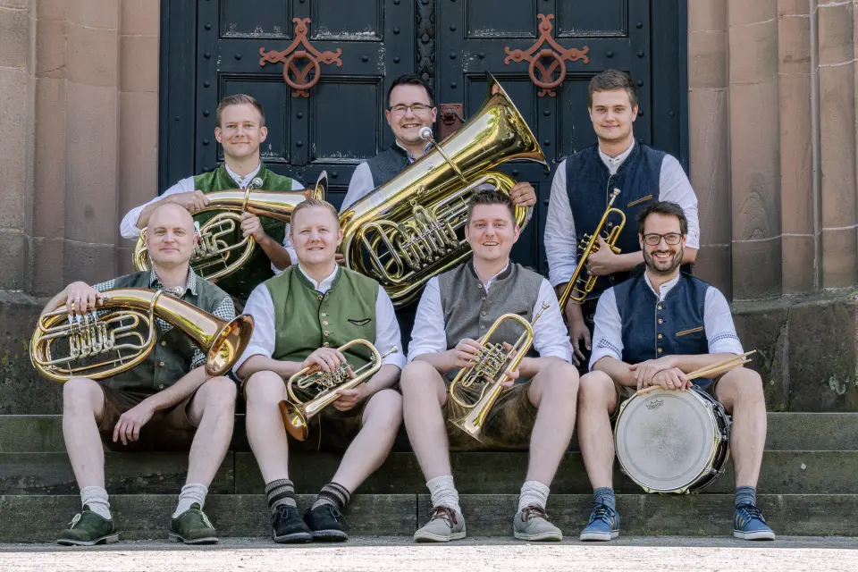

Als kleine Hausmusik im Jahr 2016 gegründet, musizieren Die Lordis mittlerweile in der klassischen Egerländer 7er-Besetzung. Neben traditioneller Blasmusik mit Polkas, Walzern und Märschen präsentieren die Musikanten aus dem schönen Dorf Wipperfeld im Herzen des Bergischen auch moderne Unterhaltungsmusik und sorgen so auf jeder Festivität für eine energiegeladene Atmosphäre, die jedes Publikum zum Mitfeiern animiert. Wenn auch Sie Bock auf Blasmusik und beste Stimmung auf ihrer Veranstaltung (Geburtstag, Hochzeit, Firmenfeier, Vereinsabend, Oktoberfest…) haben, sprechen Sie uns an.
| Datum | Ort | Event |
|---|---|---|
| 31.03.2023 | Wipperfürth | Hochzeit |
| 09.06.2023 | Wipperfeld | Festkommers Feuerwehr |
| 26.08.2023 | Kirchborchen | Bundesjungschützentag |